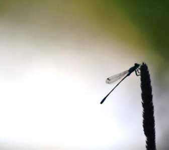
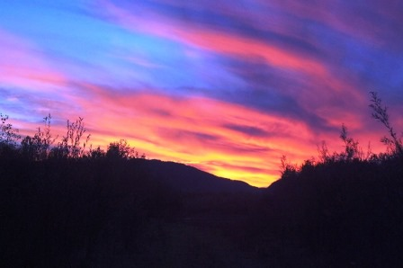

Задача 4. Создайте div размерами ширина – 100%, высота 250px. Нижедобавьте 4-5 изображений с одинаковыми классами (.bckg), разного размера.Добавьте событие, которое будет при клике на изображенииустанавливать его фоном блока div со свойством background-size: contain.


